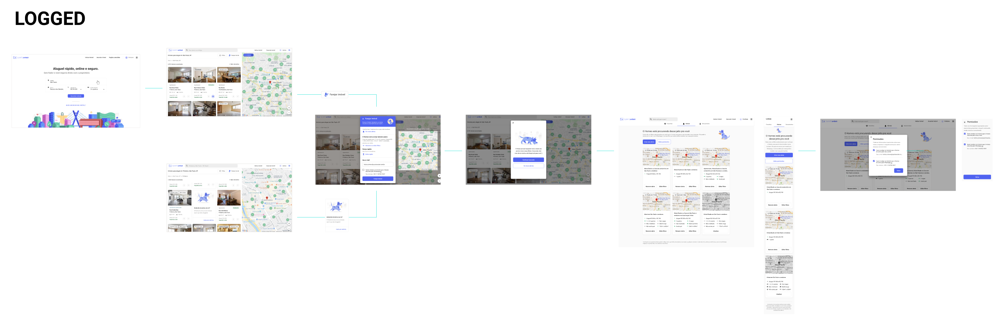
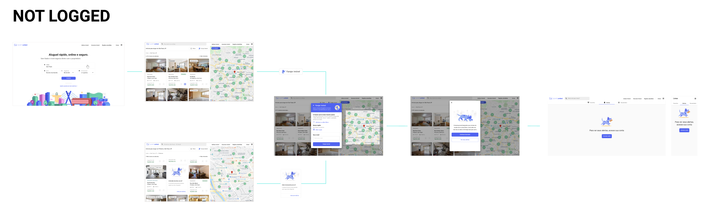

Resume
One of the opportunities my squad at QuintoAndar was exploring was the power of notifications to nurture leads throughout their home searching journey. The platform already had a feature that enabled users to program an alert that would notify them through email when a new listing that could match their filters came up on the site. As we noticed in our analysis, its users were generally more prone to convert, which means that they were more likely to book visits at listings in the site.
Even so, it was not the majority of users at the site that would interact with the feature. As we saw great potential to the conversion scope, we started to point out major problems in the experience surrounding it and began to experiment with small improvements that would give more control and visibility to its users.
What
Lead nurturing through a better search experience using the programmed alerts feature.
What
Increase the number of visits booked through the engagement of users with the alert feature.
Problem
How might we bring awareness to the alerts’ feature and its value? How might we turn it into a more user-friendly tool to help them to find the ideal listing as soon as possible?
Business perspective
Engagement: Users who have alerts have higher rates of visit booking than the ones that don't, but they are a minority. The feature is not restricted to logged users, allowing someone to create an alert just by inputting their email and that showed some adoption so far: a fraction of all not-logged users (tracked by their active sessions) had an average of 1-2 alerts programmed, while logged users had 2-3 linked to the emails.
Communication: The resulting listings would be sent once a day through email, one of our major contact points with users. Metrics showed that these emails had high open rates and click through rates.
User perspective
Previous research: other teams had already experimented with the usability of the alert tool. We knew that it was not an easy-to-find feature in the interface altogether, but a few tests had shown us that the CTAs positioning, a new curious label for them and the use of the image of our dog mascot, Homes, could spike interest in the user and result in more clicks.
Control: users could only know the alerts were working if they received emails to confirm its creation or with the search results. If they wanted to edit the alert, they could only create a new one. Their only possible action once it was created was to unsubscribe to all following emails, blocking the possibility of receiving them again in the future.
Purpose: the alerts would work as a digital agent, searching for new listings for the users and sending the interesting ones to their emails.
”I don't want to spend all my time searching every home in the site, I want you to search for me and send me the best ones.”
Research goals
-
#1
How do users in general perform their search? How do they interact with filters and what are their pain points in the experience as a whole?
-
#2
How do users interact with the alerts? Do they recognize them in the interface? What do they expect from them?
Research methods
-
#1
Desk research of previous metrics and researches exploring the usability of the feature and all of the flows that lead to it in the product
-
#2
Exploratory qualitative interviews through phone calls with a semi-structured screening
-
#3
A/B testing
Framework used
-
What I want to find out: Do they recognize the alerts? How is their interaction with them? What do they expect from its results? Does the frequency of the emails matches their needs? How they expect to control these aspects?
-
What can I ask to find that out
-
Who I want to exclude: Profiles that belong to landlords, agents, +30 days inactive users and in-house personnel
Based on Michael Margolis' UX Research method.
What we found out
-
#1
Users expect the alerts to work as a personal agent, searching for new listings for the users and sending the interesting ones to their emails.
-
#2
Users that used alerts were not aware of how many or which alerts they had programmed and often found difficulty controlling them.
-
#3
More engaged users could recognize the alerts' feature easily, even citing our mascot, the dog Homes. This implied on an explorer behavior that we were benefiting from.
-
#4
Not every user could distinguish between emails with alerts' results and other recommendations. Previous researches showed that many users struggled with our daily recommendations because they would not meet their search parameters, as they were generated on broader data.
Solution
Prototypes
We improved the alerts' feature by giving users a better control of it. We created a new area in the platform for Alert Management, easily acessible through navigation menus or the average search flow.
We kept the feature available for not-logged users, as it had a good adoption. When this type of user created an alert, we stored that data in his session and linked the parameters picked for that alert with his email. In spite of that, we decided to bring the management area as a way of activating those users, pointing some new value in logging in while also protecting his data, as now the alerts could also send results to his cellphone number and that kind of information could not be out in the open.
The card to create alerts now had a lot more information, informing the user of what the feature was for (1), how many alerts he had and the possibility of updating them intead of creating new ones, while also leading the user to the new management area (2), the filters applied to his current search that would compose the new alert, if he desired to create it anyway (3), his email (4) and an opt-in so that he would receive new listings through his Whatsapp (5).The alert management area gave control of every alert ever creted for the user. He could remove it, edit its filters to match his actual search or update an already expired one. Following our search algorithms, every alert was active for 30 days but users would just stop receiving emails with results if that time was over, without ever knowing exaclty why. Now he could track its expiring date and take action, if necessary.
Finally, the new feature would be easily acessed by users right from the emails with their results, being a constant reminder that they could improve them by updating their alerts.